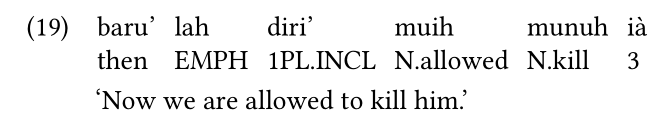

COSCUP-2019, Taipei, 17-18 Aug 2019
Andre Goderich 郭育賢
National Tsinghua University
yuhsien77@gmail.com
goderich.github.io/coscup2019
| 文書處理器 | LaTeX |
|---|---|
| 較好上手 | 較難上手 |
| 排版容易跑掉 | 為排版而生 |
| 適合較短篇的文件 （幾頁） |
適合較長篇的文章 （十幾頁UP） |
| 邊寫邊排版 | 撰寫與排版分工 |
*italic*
**bold**
| foo | bar |
|-----|------|
| baz | quux |italic
bold
| foo | bar |
|---|---|
| baz | quux |
(需要用 pandoc-citeproc 過濾器）
bibliography.bib
(需要用 pandoc-crossref 過濾器）
header-includes: |
\usepackage{gb4e}
\begin{exe}
\ex
\gll baru' lah diri' muih munuh ià\\
then EMPH 1PL.INCL N.allowed N.kill 3\\
\trans `Now we are allowed to kill him.'
\end{exe}
優點：
缺點：
前往 https://pandoc.org/getting-started.html
閱讀說明書 https://pandoc.org/MANUAL.html